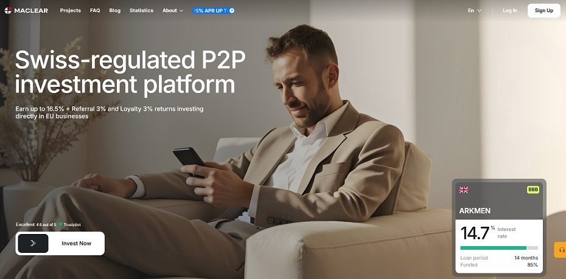
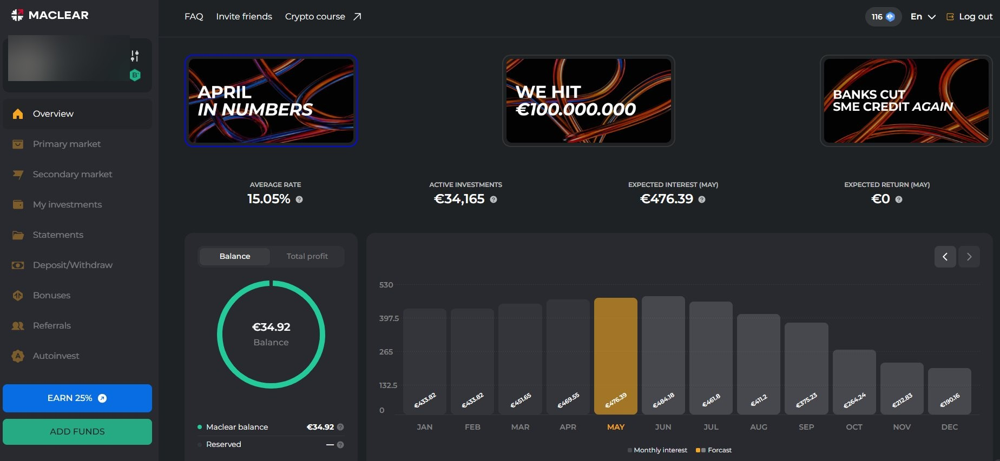
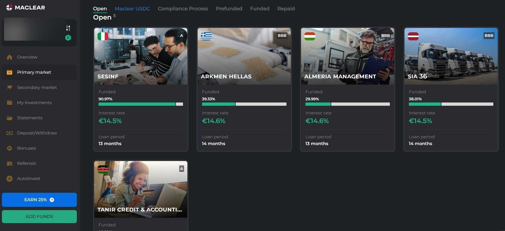
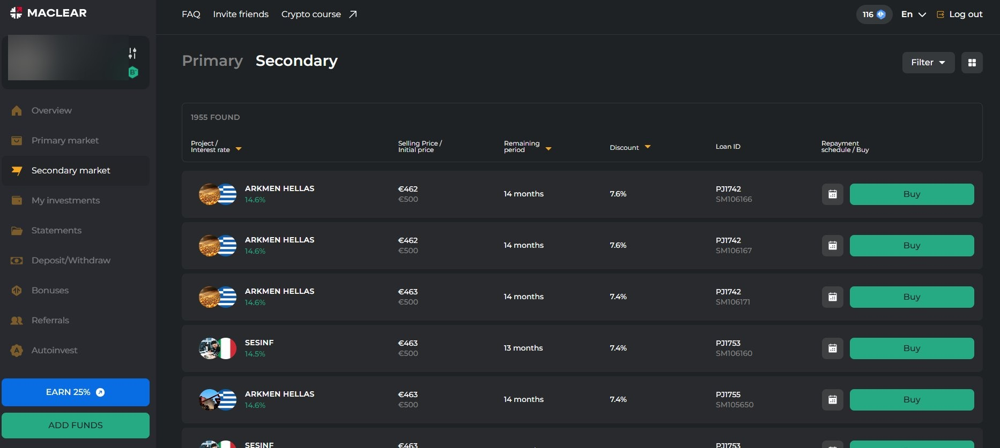

Caso de estudo de uma plataforma P2P: Maclear

Como chegámos à Maclear
Quem investe em plataformas P2P há algum tempo sabe que o mercado está dividido em dois grandes grupos: as plataformas com licença ECSPR, reguladas por autoridades europeias, e as que operam fora desse enquadramento. Durante muito tempo, a nossa postura foi simples: privilegiar sempre as reguladas. Mais transparência, mais proteção, menos surpresas.
Mas há exceções que merecem ser analisadas com cuidado. A Maclear é uma delas. Não tem licença ECSPR, porque não opera na União Europeia. Opera na Suíça, sob jurisdição helvética, com um conjunto de proteções legais que, nalguns aspetos, vai mais longe do que o regulamento europeu. Foi isso que nos fez querer perceber melhor o que esta plataforma oferece, fazendo sentido incluí-la num portfólio diversificado.
Este artigo é o resultado dessa análise: parte investigação documental, parte experiência direta de investimento.
1. O que é a Maclear
A Maclear é uma plataforma suíça de crowdlending P2B (peer-to-business) — ou seja, liga investidores individuais diretamente a pequenas e médias empresas (PMEs) que precisam de financiamento. Ao contrário das plataformas P2P de consumo, que financiam crédito pessoal, a Maclear financia negócios reais: projetos de expansão, capital de maneio, aquisição de equipamento.
O foco geográfico está na Europa (de Leste), mercados onde as PMEs têm tipicamente mais dificuldade em aceder ao crédito bancário convencional e onde as taxas praticadas pelos bancos chegam a ser o dobro das verificadas na Europa Ocidental. Essa realidade é o motor da rentabilidade que a plataforma consegue oferecer aos investidores.
O modelo de financiamento por fases (Stages)
Um dos elementos mais diferenciadores da Maclear é o seu modelo de financiamento faseado. Cada projeto é dividido em etapas (stages), cada uma representando uma fatia do empréstimo com as suas próprias condições. O mutuário não recebe o financiamento total de uma só vez, recebe-o à medida que completa cada fase, o que cria um mecanismo adicional de controlo e verificação do uso dos fundos.
Para o investidor, este modelo tem uma vantagem prática: é possível entrar em diferentes fases do mesmo projeto, o que reduz o risco de concentração num único momento e permite uma diversificação mais granular do portfólio.
Proteção legal pela lei suíça
A Maclear opera sob a jurisdição suíça, e isso tem implicações legais concretas para os investidores. Ao abrigo do Código das Obrigações suíço (Artigo 401):
- Os fundos dos clientes são mantidos em contas segregadas, separadas dos fundos operacionais da plataforma.
- Os ativos dos investidores estão excluídos da massa falida em caso de insolvência da plataforma.
Na prática, isto significa que mesmo que a Maclear enfrentasse problemas financeiros graves, as tuas aplicações estariam legalmente protegidas e não poderiam ser usadas para pagar dívidas da empresa. Uma proteção que existe por lei, não apenas por política interna da plataforma.
A supervisão do cumprimento das normas AML (anti-branqueamento de capitais) e de verificação de clientes é assegurada pela PolyReg SRO. Uma organização de autorregulação com mais de 25 anos de história, que por sua vez está sob a supervisão da FINMA (Autoridade Suíça de Supervisão dos Mercados Financeiros). A PolyReg não apenas verifica o cumprimento das regras: define padrões profissionais elevados, realiza inspeções regulares e monitoriza a transparência financeira e ética operacional dos seus membros.
2. O que distingue a Maclear: análise das vantagens
2.1 Sistema de proteção em dois níveis
A Maclear dispõe de dois mecanismos complementares de proteção do investidor que funcionam em cascata:
Fundo de Provisão (Reserve Fund)
Formado a partir de uma comissão de 2% cobrada ao mutuário sobre o valor do empréstimo, e de uma comissão de 2,5% sobre as transações do mercado secundário. Este fundo atua como almofada de liquidez: se um mutuário tiver dificuldades temporárias ou atrasos técnicos nos pagamentos, o fundo cobre automaticamente os juros devidos aos investidores, mantendo o fluxo de rendimento estável. Não resolve incumprimentos graves, mas elimina o ruído dos atrasos pontuais.
Agente de Garantia (Collateral Agent)
A Maclear atua como agente legal de garantia sobre os colaterais dos mutuários — ativos reais como imóveis, equipamento ou inventário. Se um mutuário entrar em incumprimento sério e os recursos do Fundo de Provisão forem insuficientes, a plataforma inicia o processo de cobrança e realização dos colaterais, distribuindo os fundos recuperados proporcionalmente entre os investidores com posições nesse projeto.
Na história da plataforma, registou-se um caso de incumprimento. Graças à atuação do Agente de Garantia, todos os investidores recuperaram a totalidade do capital investido. O processo de realização do colateral levou tempo, é um procedimento legal, mas o desfecho foi positivo para os investidores.
2.2 Mercado secundário com liquidez real
A Maclear oferece um mercado secundário muito ativo onde os investidores podem vender as suas posições antes do vencimento. Os números falam por si: Só em novembro de 2025, movimentaram-se mais de 1,3 milhões de euros em transações secundárias, com cerca de 5.000 lotes transacionados. É possível sair antecipadamente (com uma comissão de 2,5%), comprar posições com desconto de até 10%, ou adquirir investimentos com prazo residual mais curto.
Esta é uma das razões pelas quais avaliamos a liquidez da Maclear em 4/5 na nossa tabela comparativa — acima de muitas plataformas reguladas que têm mercados secundários anémicos ou inexistentes.
2.3 Estrutura de comissões transparente
A Maclear não cobra comissões de depósito, de investimento nem de levantamento. A única comissão existente é de 2,5% sobre as vendas no mercado secundário (e, esse valor vai diretamente para o Fundo de Provisão). Não há custos escondidos nem encargos administrativos.
2.4 Informação detalhada por projeto
Cada projeto disponível na plataforma inclui uma ficha de avaliação de risco com indicadores concretos que permitem ao investidor tomar decisões informadas:
- LTV (Loan-to-Value): Rácio entre o montante do empréstimo e o valor do colateral. Um LTV baixo significa maior cobertura em caso de execução da garantia.
- Debt to Equity: Rácio entre a dívida total e o capital próprio da empresa. Um valor em torno de 2–2,5 é considerado saudável. Quanto mais baixo, menos endividada está a empresa e mais estável a sua posição financeira.
- Credit History: Avaliação do historial de crédito do mutuário, atribuída pelo departamento de compliance da Maclear com base em obrigações anteriores.
- Total Risk Score: Pontuação de risco agregada que combina todos os fatores acima, simplificando a comparação rápida entre projetos.
2.5 Transparência total e auditoria independente
A Maclear mantém uma página de estatísticas em tempo real com dados sobre volume de depósitos, número de projetos ativos por país, crescimento do número de investidores e histórico de pagamentos. As contas são auditadas regularmente pela Grant Thornton — uma das maiores firmas internacionais de auditoria.
Esta transparência permite a qualquer investidor monitorizar de forma independente a saúde da plataforma: dinâmica de novos investimentos, evolução dos projetos, eventuais atrasos. Toda a informação está disponível em tempo real, não com meses de atraso.
2.6 Rentabilidade: de onde vem e porque é sustentável
A Maclear oferece retornos entre 14% e 17% ao ano — números que, à primeira vista, podem parecer demasiado elevados para uma plataforma com este nível de segurança. A explicação está na realidade do mercado alvo.
As PMEs da Europa (de Leste) operam em mercados com margens mais elevadas do que as congéneres ocidentais: menos saturação, maior diferencial entre custo e preço de venda, melhor retorno sobre o capital investido. Em paralelo, o acesso ao crédito bancário é significativamente mais restrito: os bancos na região exigem colaterais "duros" (imóveis), recusam frequentemente financiamento baseado em contratos ou volume de negócios, e praticam taxas muito superiores às europeias. É neste gap que a Maclear opera, oferecendo velocidade e flexibilidade que os bancos não oferecem, a um custo que as empresas da região estão dispostas a pagar.
3. A questão da regulação: não é ECSPR, mas não é o vazio
A ausência de licença ECSPR é o principal ponto de fricção quando se fala da Maclear. É legítimo que assim seja — e não vamos ignorá-lo. Na nossa tabela comparativa, a Maclear aparece como "Não regulada" precisamente porque o ECSPR não se aplica fora da União Europeia.
Mas "não regulada pelo ECSPR" não é o mesmo que "sem qualquer enquadramento regulatório". O modelo de supervisão da Maclear funciona assim:
- A plataforma é membro da PolyReg SRO, organização de autorregulação sob supervisão direta da FINMA.
- A segregação de fundos é garantida por lei suíça (Artigo 401 do Código das Obrigações), não apenas por política interna.
- As contas são auditadas pela Grant Thornton anualmente.
- A FINMA é uma das autoridades de supervisão financeira mais exigentes e reconhecidas do mundo.
O que falta, comparativamente ao ECSPR, é a standardização das fichas de informação por projeto (os KIIS europeus) e o mecanismo formal de reclamação junto de uma autoridade da UE. São lacunas reais — mas o investidor que fizer a sua due diligence encontra na Maclear um nível de transparência e proteção legal que supera muitas plataformas formalmente reguladas pelo ECSPR.
Para uma análise mais aprofundada do que significa (e não significa) a regulação no contexto P2P, lê o nosso artigo sobre plataformas P2P reguladas.
4. A nossa experiência pessoal na plataforma
Decidimos investir na Maclear para verificar na prática o que os documentos e estatísticas descrevem. Partilhamos aqui dados reais da nossa conta.
Dashboard — visão geral da conta
O painel principal mostra em tempo real a taxa média de retorno (15,05% no nosso caso), o capital em investimentos ativos, os juros esperados para o mês corrente e a previsão de retornos futuros. O gráfico mensal de juros projetados até ao fim do ano dá uma leitura imediata do ritmo de rendimento. Uma funcionalidade que não é comum em muitas plataformas P2P.

Mercado primário — projetos disponíveis
No mercado primário é possível ver todos os projetos abertos para financiamento, com a percentagem já financiada, a taxa de juro e o prazo. Neste momento, encontram-se abertos projetos em Itália, Grécia, Hungria e Letónia, com taxas entre 14,5% e 14,6% e prazos de 13 a 14 meses. Cada cartão tem ainda a classificação de risco (A ou BBB), visível no canto superior direito.

Mercado secundário — liquidez real
O mercado secundário mostra bem a liquidez da plataforma: 1.955 lotes disponíveis no momento da captura, com descontos que chegam aos 7,6%. É possível filtrar por projeto, taxa, prazo residual e desconto, o que permite construir posições com retorno efetivo superior ao do mercado primário, para quem estiver disposto a analisar. A profundidade deste mercado é um dos pontos mais diferenciadores da Maclear face a outras plataformas sem licença ECSPR.

No que diz respeito a atrasos: até à data deste artigo, não registámos nenhum pagamento em atraso na nossa carteira. Os juros mensais têm sido creditados de forma consistente e dentro dos prazos.
5. Para quem faz sentido investir na Maclear
A Maclear não é para todos os perfis, nem pretende ser. Com um mínimo de investimento por projeto de 50€ e um foco claro em PMEs, é uma plataforma que requer alguma leitura e análise prévia por parte do investidor. Mas para quem está disposto a isso, o perfil encaixa bem em dois tipos de investidor:
- Investidor moderado a crescimento que quer exposição a retornos entre 14 e 17%, com proteção legal sólida, e que não depende de liquidez imediata (embora o mercado secundário esteja disponível).
- Investidor diversificado que já tem posições em plataformas ECSPR como Mintos, Afranga, ou Debitum e quer adicionar uma plataforma com jurisdição diferente e colaterais reais sobre PMEs (reduzindo a correlação entre posições).
Não recomendamos a Maclear como única plataforma de um portfólio P2P. A ausência de licença ECSPR e a concentração geográfica na Europa (de Leste) são fatores de risco que devem ser compensados com diversificação. Mas como parte de um portfólio equilibrado, a relação risco/retorno é, na nossa perspetiva, muito interessante.
Se ainda não fizeste a tua conta, podes registar-te na Maclear através do nosso link de afiliado e aproveitar o bónus de boas-vindas disponível na nossa página de plataformas.
Sem comissões · Mínimo 50€ · Bónus de boas-vindas (15€) · 3% de Cashback
Conclusão
A Maclear é uma plataforma que desafia a dicotomia simples entre "regulada = segura" e "não regulada = arriscada". Opera fora do ECSPR, mas com proteções legais suíças que são, em vários aspetos, mais robustas do que as garantidas pela regulação europeia. O Fundo de Provisão, o sistema de garantias reais, a auditoria pela Grant Thornton e a transparência em tempo real constroem um argumento sólido para a incluir num portfólio P2P diversificado.
O elemento que não substitui a regulação europeia, e que cada investidor deve avaliar por si, é o mecanismo formal de reclamação junto de uma autoridade da UE. Se essa salvaguarda for essencial para o teu perfil de risco, a Maclear não é para ti. Se consegues fazer a tua própria due diligence e vês valor numa exposição a PMEs da Europa com retornos de dois dígitos e proteção legal real, vale definitivamente a pena analisar com atenção.